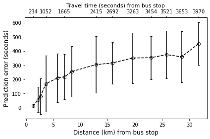
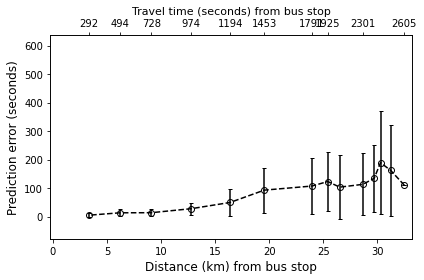

[1]:
'''
Import libraries
'''
from pymongo import MongoClient
import math
import pprint
#import geocoder
import pprint
import matplotlib.pyplot as plt
from pydoc import help
from scipy.stats.stats import pearsonr
import os
import numpy as np
[2]:
def PredictionErrorAtIDSouth (id_value,TripStartTime,Bound, NpPathDir, ResultPathDir_Np, UseMongoDB):
'''
input: the id of the bus-stop, trip start time and bound value
output: the prediction for the provided bus-stop id for the trips with the trip start time
and direction of the bound value
function: it computes the prediction for the provided bus-stop id for the trips with the trip start time
and direction of the bound value
'''
if UseMongoDB==True:
PredictionErrorLists = [rec for rec in
con[RouteName]['PredictionErrorForSubStopsV2.'+TripStartTime+'.'+Bound].find()]
BusStopRecords = [rec for rec in
con[RouteName]['BusStops.SouthBound'].find()]
else:
PredictionErrorLists = np.load(f'{ResultPathDir_Np}/{RouteName}/PredictionErrorForSubStopsV2.{TripStartTime}.{Bound}.npy',
allow_pickle=True)
BusStopRecords = np.load(f'{NpPathDir}/{RouteName}/BusStops.SouthBound.npy',allow_pickle=True)
PredictionErrorList = [rec for rec in PredictionErrorLists if rec['id']==id_value]
BusStopRecord = [rec for rec in BusStopRecords if rec['id']==id_value]
if len(BusStopRecord) != 0:
#StopDistFromOrigin=BusStopRecord[0]['normalizedDistanceFromOrigin']
StopDistFromOrigin=BusStopRecord[0]['distanceFromOrigin']
if len(PredictionErrorList)!=0:
PredictionErrorList=PredictionErrorList[0]
PredictionErrorMeanList = []
PredictionErrorSTDList = []
NormalizedDistForStopList = []
PredictionByIndexList = []
#pprint.pprint(PredictionErrorList)
for PredictionByIndex in PredictionErrorList['PredictionByIndexList']:
#BusStopRecord = [rec for rec in con[RouteName]['BusStops.SouthBound'].find({'id':PredictionByIndex+1}).limit(1)]
BusStopRecord = [rec for rec in BusStopRecords if rec['id'] == PredictionByIndex+1]
#For NorthBound
#BusStopRecord = [rec for rec in con[RouteName]['BusStops.SouthBound'].find({'id':PredictionByIndex-1}).limit(1)]
if len(BusStopRecord) != 0:
#NormalizedDistForStopList.append(abs(BusStopRecord[0]['normalizedDistanceFromOrigin']-StopDistFromOrigin))
NormalizedDistForStopList.append(abs(BusStopRecord[0]['distanceFromOrigin']-StopDistFromOrigin)/1000)
#For NorthBound
#PredictionByIndex.append(PredictionByIndex-1)
PredictionByIndexList.append(PredictionByIndex+1)
PredictionErrorMeanList.append(PredictionErrorList[str(PredictionByIndex)][0]/1000)
PredictionErrorSTDList.append(PredictionErrorList[str(PredictionByIndex)][1]/1000)
return(NormalizedDistForStopList,PredictionErrorMeanList,PredictionErrorSTDList,PredictionByIndexList)
[3]:
def PredictionErrorAtIDNorth (id_value,TripStartTime,Bound, NpPathDir, ResultPathDir_Np, UseMongoDB):
'''
input: the id of the bus-stop, trip start time and bound value
output: the prediction for the provided bus-stop id for the trips with the trip start time
and direction of the bound value
function: it computes the prediction for the provided bus-stop id for the trips with the trip start time
and direction of the bound value
'''
if UseMongoDB==True:
PredictionErrorLists = [rec for rec in
con[RouteName]['PredictionErrorForSubStopsV2.'+TripStartTime+'.'+Bound].find()]
BusStopRecords = [rec for rec in
con[RouteName][f'BusStops.{Bound}Bound'].find()]
else:
PredictionErrorLists = np.load(f'{ResultPathDir_Np}/{RouteName}/PredictionErrorForSubStopsV2.{TripStartTime}.{Bound}.npy',
allow_pickle=True)
BusStopRecords = np.load(f'{NpPathDir}/{RouteName}/BusStops.{Bound}Bound.npy',allow_pickle=True)
PredictionErrorList = [rec for rec in PredictionErrorLists if rec['id']==id_value]
BusStopRecord = [rec for rec in BusStopRecords if rec['id']==id_value]
if len(BusStopRecord) != 0:
#StopDistFromOrigin=BusStopRecord[0]['normalizedDistanceFromOrigin']
StopDistFromOrigin=BusStopRecord[0]['distanceFromOrigin']
if len(PredictionErrorList)!=0:
PredictionErrorList=PredictionErrorList[0]
PredictionErrorMeanList = []
PredictionErrorSTDList = []
NormalizedDistForStopList = []
PredictionByIndexList = []
#pprint.pprint(PredictionErrorList)
for PredictionByIndex in PredictionErrorList['PredictionByIndexList']:
#BusStopRecord = [rec for rec in con[RouteName]['BusStops.SouthBound'].find({'id':PredictionByIndex+1}).limit(1)]
#For NorthBound
#BusStopRecord = [rec for rec in con[RouteName][f'BusStops.{Bound}Bound'].find({'id':PredictionByIndex-1}).limit(1)]
BusStopRecord = [rec for rec in BusStopRecords if rec['id'] == PredictionByIndex-1]
if len(BusStopRecord) != 0:
#NormalizedDistForStopList.append(abs(BusStopRecord[0]['normalizedDistanceFromOrigin']-StopDistFromOrigin))
NormalizedDistForStopList.append(abs(BusStopRecord[0]['distanceFromOrigin']-StopDistFromOrigin)/1000)
#For NorthBound
PredictionByIndexList.append(PredictionByIndex-1)
#PredictionByIndexList.append(PredictionByIndex+1)
PredictionErrorMeanList.append(PredictionErrorList[str(PredictionByIndex)][0]/1000)
PredictionErrorSTDList.append(PredictionErrorList[str(PredictionByIndex)][1]/1000)
return(NormalizedDistForStopList,PredictionErrorMeanList,PredictionErrorSTDList,PredictionByIndexList)
[4]:
def Extract_and_Plot_PredictionError_SouthBound(TripStartTimeAggregate, ResultPathDir, NpPathDir, ResultPathDir_Np, UseMongoDB):
'''
input: Trip start time
output: None
function: It extracts the prediction records from the MongoDB database and computes the prediction error
for the farthest bus-stop of the route on the south bound direction.
'''
#TActualList =[0, 234, 506, 793, 1052, 1367, 1665, 2273, 2415, 2692, 3263, 3454, 3521, 3653, 3970]
TActualList =[234, 506, 793, 1052, 1367, 1665, 2273, 2415, 2692, 3263, 3454, 3521, 3653, 3970]
NormalizedDistForStopList,PredictionErrorMeanList,PredictionErrorSTDList,PredictionByIndexList = PredictionErrorAtIDSouth (0,TripStartTimeAggregate[0][1][0],TripStartTimeAggregate[0][1][1],
NpPathDir, ResultPathDir_Np, UseMongoDB
)
# 18 South
print(len(NormalizedDistForStopList),len(PredictionErrorMeanList))
PearsonrCorrelationCoefficeintMean,PValueMean = pearsonr(NormalizedDistForStopList,PredictionErrorMeanList)
PearsonrCorrelationCoefficeintSTD,PValueSTD = pearsonr(NormalizedDistForStopList,PredictionErrorSTDList)
PearsonrCorrelationCoefficeintMeanTActual,PValueMeanTActual = pearsonr(TActualList,PredictionErrorMeanList)
PearsonrCorrelationCoefficeintSTDTActual,PValueSTDTActual = pearsonr(TActualList,PredictionErrorSTDList)
print("PearsonrCorrelationCoefficeintMean: ")
print(PearsonrCorrelationCoefficeintMean)
print("PearsonrCorrelationCoefficeintSTD: ")
print(PearsonrCorrelationCoefficeintSTD)
print("PearsonrCorrelationCoefficeintMeanTActual: ")
print(PearsonrCorrelationCoefficeintMeanTActual)
print("PearsonrCorrelationCoefficeintSTDTActual: ")
print(PearsonrCorrelationCoefficeintSTDTActual)
ax1 = plt.subplot(1,1,1)
ax1.errorbar(NormalizedDistForStopList,PredictionErrorMeanList,PredictionErrorSTDList,marker='o',linestyle='--',label='SouthBound',markerfacecolor='None',color='k',capsize=2)
XLimitDistance = ax1.get_xlim()
global yLimit
yLimit = ax1.get_ylim()
global xLimit
xLimit = ax1.get_xlim()
plt.xlabel('Distance (km) from bus stop',fontsize=12)
plt.ylabel('Prediction error (seconds)',fontsize=12)
#plt.title('Prediction error v/s Distance from bus stop')
plt.tick_params(axis='both', which='major', labelsize=10)
plt.tick_params(axis='both', which='minor', labelsize=10)
#PearsonrCorrelationCoefficeintMean
#plt.text(2,570,'Correlation between distance and mean error: '+"%.4f" %round(PearsonrCorrelationCoefficeintMean,4)+'\nCorrelation between distance and variation in error: '+"%.4f" %round(PearsonrCorrelationCoefficeintSTD,4),va='center', size=11 )
ax2= ax1.twiny()
ax2.set_xticks([NormalizedDistForStopList[i] for i in range(len(NormalizedDistForStopList)) if i not in [1,2,4,6]])
ax2.set_xticklabels([TActualList[i] for i in range(len(TActualList)) if i not in [1,2,4,6]])
ax2.set_xlim(xLimit)
ax2.set_xlabel(r"Travel time (seconds) from bus stop",size=11)
plt.tight_layout()
plt.savefig(f'{ResultPathDir}EndStopPredictionError_SouthBound.png',format='png',dpi=600)
plt.show()
[5]:
def Extract_and_Plot_PredictionError_NorthBound(TripStartTimeAggregate, ResultPathDir, NpPathDir, ResultPathDir_Np, UseMongoDB):
'''
input: Trip start time
output: None
function: It extracts the prediction records from the MongoDB database and computes the prediction error
for the farthest bus-stop of the route on the north bound direction.
'''
TActualList = [2605, 2598, 2452, 2392, 2301, 2111, 1925, 1791, 1453,1194, 974, 728, 494, 292] #, 0]
NormalizedDistForStopList,PredictionErrorMeanList,PredictionErrorSTDList,PredictionByIndexList = PredictionErrorAtIDNorth (14,TripStartTimeAggregate[0][0][0],TripStartTimeAggregate[0][0][1],
NpPathDir, ResultPathDir_Np, UseMongoDB
)
print(len(NormalizedDistForStopList),len(PredictionErrorMeanList))
print(len(TActualList),len(PredictionErrorMeanList))
PearsonrCorrelationCoefficeintMean,PValueMean = pearsonr(NormalizedDistForStopList,PredictionErrorMeanList)
PearsonrCorrelationCoefficeintSTD,PValueSTD = pearsonr(NormalizedDistForStopList,PredictionErrorSTDList)
PearsonrCorrelationCoefficeintMeanTActual,PValueMeanTActual = pearsonr(TActualList,PredictionErrorMeanList)
PearsonrCorrelationCoefficeintSTDTActual,PValueSTDTActual = pearsonr(TActualList,PredictionErrorSTDList)
print("PearsonrCorrelationCoefficeintMean: ")
print(PearsonrCorrelationCoefficeintMean)
print("PearsonrCorrelationCoefficeintSTD: ")
print(PearsonrCorrelationCoefficeintSTD)
print("PearsonrCorrelationCoefficeintMeanTActual: ")
print(PearsonrCorrelationCoefficeintMeanTActual)
print("PearsonrCorrelationCoefficeintSTDTActual: ")
print(PearsonrCorrelationCoefficeintSTDTActual)
plt.cla()
ax1 = plt.subplot(1,1,1)
ax1.set_ylim(yLimit)
ax1.set_xlim(xLimit)
ax1.errorbar(NormalizedDistForStopList,PredictionErrorMeanList,PredictionErrorSTDList,marker='o',linestyle='--',label='NorthBound: '+str(PearsonrCorrelationCoefficeintMean)+', '+str(PearsonrCorrelationCoefficeintSTD),markerfacecolor='None',color='k',capsize=2)
print(ax1.get_xlim())
plt.xlabel('Distance (km) from bus stop',fontsize=12)
plt.ylabel('Prediction error (seconds)',fontsize=12)
plt.tick_params(axis='both', which='major', labelsize=10)
plt.tick_params(axis='both', which='minor', labelsize=10)
ax2= ax1.twiny()
ax2.set_xlim(xLimit)
ax2.set_xticks([NormalizedDistForStopList[i] for i in range(len(NormalizedDistForStopList)) if i not in [1,2,3,5]])
ax2.set_xticklabels([TActualList[i] for i in range(len(TActualList)) if i not in [1,2,3,5]])
ax2.set_xlabel(r"Travel time (seconds) from bus stop",size=11)
plt.tight_layout()
plt.savefig(f'{ResultPathDir}EndStopPredictionError_NorthBound.png',format='png',dpi=600)
plt.show()
Execution of code
[6]:
from pathlib import Path
'''For directory management'''
path = Path(os.getcwd())
OneLevelUpPath = path.parents[0]
[7]:
'''Limits for plots'''
xLimit = 0
yLimit = 0
[8]:
con = MongoClient()
RouteName='Git_ISCON_PDPU'
#ResultPathDir = os.path.join(os.getcwd(), 'Result','PredictionError','')
ResultPathDir = os.path.join(str(OneLevelUpPath), 'results','PredictionError','')
ResultPathDir_Np = os.path.join(str(OneLevelUpPath), 'results','NpData','')
NpPathDir = os.path.join(str(OneLevelUpPath), 'data','NpData')
[9]:
#'''
ProjectDataUsed = True
UsedPreTrained = False
UseMongoDB = True
#'''
'''
ProjectDataUsed = True
UsedPreTrained = True
UseMongoDB = False
'''
[9]:
'\nProjectDataUsed = True\nUsedPreTrained = True\nUseMongoDB = False\n'
[10]:
if UseMongoDB==True:
TripStartTimeAggregate= [Tr['TripStartTimeBound'] for Tr in
con [RouteName]['TripStartTimeAggregate'].find()]
else:
TripStartTimeAggregate_Record = np.load(f'{NpPathDir}/{RouteName}/TripStartTimeAggregate.npy',
allow_pickle=True)
TripStartTimeAggregate = [rec['TripStartTimeBound'] for rec in TripStartTimeAggregate_Record]
[11]:
Extract_and_Plot_PredictionError_SouthBound(TripStartTimeAggregate, ResultPathDir, NpPathDir, ResultPathDir_Np, UseMongoDB)
Extract_and_Plot_PredictionError_NorthBound(TripStartTimeAggregate, ResultPathDir, NpPathDir, ResultPathDir_Np, UseMongoDB)
14 14
PearsonrCorrelationCoefficeintMean:
0.918975223361703
PearsonrCorrelationCoefficeintSTD:
0.39390106016603077
PearsonrCorrelationCoefficeintMeanTActual:
0.9772182984737138
PearsonrCorrelationCoefficeintSTDTActual:
0.5501624254277958

14 14
14 14
PearsonrCorrelationCoefficeintMean:
0.9289620609194672
PearsonrCorrelationCoefficeintSTD:
0.7119881075563027
PearsonrCorrelationCoefficeintMeanTActual:
0.9303267279052778
PearsonrCorrelationCoefficeintSTDTActual:
0.7155176551269204
(-0.2530742780170834, 33.24133377279121)
/usr/local/lib/python3.6/dist-packages/ipykernel_launcher.py:35: MatplotlibDeprecationWarning: Adding an axes using the same arguments as a previous axes currently reuses the earlier instance. In a future version, a new instance will always be created and returned. Meanwhile, this warning can be suppressed, and the future behavior ensured, by passing a unique label to each axes instance.

MongoDB Save/Load
[12]:
def LoadInMongoFromNp(RouteName, NpPathDir):
'''
input: The route name and numpy directory path
output: The MongoDB database collections from the Numpy files
function: It creates the MongoDB database from the Numpy files.
'''
CollectionNames = os.listdir(f'{NpPathDir}/{RouteName}')
#print(CollectionNames)
CollectionNames_1 = [rec for rec in CollectionNames if '\'.' not in rec] # To address the error
#print('Saving data in mongoDB')
for Collection in CollectionNames_1:
RecordsList = np.load(f'{NpPathDir}/{RouteName}/{Collection}', allow_pickle=True)
#print(Collection)
#pprint.pprint(RecordsList[0:3])
CollectionName = Collection[0:-4]
print(RouteName, CollectionName)
con[RouteName][CollectionName].insert_many(RecordsList.tolist())
def SaveInNp(RouteName, NpPathDir):
'''
input: The route name and numpy directory path
output: Numpy files of the MongoDB database
function: It stores the Numpy files for the MongoDB database in the specified directory path
'''
CollectionNames = [Collection for Collection in
con[RouteName].list_collection_names() if Collection!='system.indexes']
CollectionNames_1 = [Collection for Collection in
con[RouteName].list_collection_names() if 'Prediction' not in Collection]
for CollectionName in CollectionNames_1:
print('CollectionName', CollectionName)
RecordsList = [rec for rec in con[RouteName][CollectionName].find().sort([('_id',1)])]
for RecordDict in RecordsList:
del[RecordDict['_id']]
if os.path.exists(os.path.join(NpPathDir, RouteName)) == False:
os.mkdir(os.path.join(NpPathDir, RouteName))
#np.save(f'{Path}/{Database}/{CollectionName}.npy', RecordsList)
np.save(os.path.join(NpPathDir, RouteName,f'{CollectionName}.npy'), RecordsList)
print('Unsaved collection')
print([Collection for Collection in
con[RouteName].list_collection_names() if 'Prediction' in Collection])
[13]:
if UsedPreTrained == False:
SaveInNp(RouteName, NpPathDir)
elif UseMongoDB==True:
RouteNamesList = con.list_database_names()
if RouteName not in RouteNamesList:
'''Load the data for RouteName, if RouteName is not in RouteNamesList'''
print('Loading MongoData from Np files')
LoadInMongoFromNp(RouteName, NpPathDir)
CollectionName 14_02_2018__18_30_22.BusStopsRecord
CollectionName 02_02_2018__07_38_50.Filtered
CollectionName H.18.South.21_02_2018__18_28_29
CollectionName 20_03_2018__07_28_45.Filtered
CollectionName 03_04_2018__07_38_31.RawRecords
CollectionName TripStartTimeAggregate
CollectionName H.07.North.08_01_2018__07_41_43
CollectionName 19_02_2018__07_46_19.RawRecords
CollectionName 14_02_2018__07_41_04.Filtered
CollectionName H.18.South.20_02_2018__18_31_07
CollectionName 01_02_2018__07_39_12.RawRecords
CollectionName 30_01_2018__07_42_30.BusStopsRecord
CollectionName 15_02_2018__16_08_22.RawRecords
CollectionName H.18.South.22_12_2017__07_38_21
CollectionName 20_02_2018__18_31_07.Filtered
CollectionName 21_02_2018__07_42_42.BusStopsRecord
CollectionName 21_02_2018__07_42_42.RawRecords
CollectionName H.07.North.28_03_2018__18_30_02
CollectionName 13_03_2018__07_29_52.RawRecords
CollectionName H.07.North.21_02_2018__18_28_29
CollectionName 14_03_2018__07_35_46.Filtered
CollectionName 18_01_2018__07_38_10.RawRecords
CollectionName 29_01_2018__07_39_47.RawRecords
CollectionName 26_12_2017__07_32_35.Filtered
CollectionName 22_02_2018__07_42_45.RawRecords
CollectionName 20_03_2018__07_28_45.RawRecords
CollectionName 21_02_2018__18_28_29.RawRecords
CollectionName 03_04_2018__07_38_31.Filtered
CollectionName BusStops.SouthBound
CollectionName H.07.North.19_01_2018__07_38_47
CollectionName H.18.South.02_02_2018__07_38_50
CollectionName 14_02_2018__18_30_22.RawRecords
CollectionName 21_02_2018__07_42_42.Filtered
CollectionName H.07.North.20_02_2018__18_31_07
CollectionName 13_03_2018__07_29_52.Filtered
CollectionName 21_12_2017__07_52_59.Filtered
CollectionName H.07.North.15_02_2018__18_33_19
CollectionName H.07.North.20_12_2017__07_38_14
CollectionName 19_01_2018__07_38_47.BusStopsRecord
CollectionName 22_01_2018__07_41_04.BusStopsRecord
CollectionName 03_04_2018__18_32_45.Filtered
CollectionName 20_02_2018__07_41_48.Filtered
CollectionName 15_02_2018__07_45_52.Filtered
CollectionName 30_01_2018__07_42_30.Filtered
CollectionName 29_01_2018__07_39_47.BusStopsRecord
CollectionName 08_01_2018__18_37_49.BusStopsRecord
CollectionName 08_01_2018__07_41_43.Filtered
CollectionName 15_02_2018__18_33_19.BusStopsRecord
CollectionName 22_01_2018__07_41_04.RawRecords
CollectionName H.18.South.22_02_2018__07_42_45
CollectionName H.18.South.08_01_2018__07_41_43
CollectionName H.18.South.29_12_2017__07_37_27
CollectionName 28_03_2018__18_30_02.RawRecords
CollectionName 28_03_2018__18_30_02.BusStopsRecord
CollectionName H.07.North.14_02_2018__07_41_04
CollectionName 22_01_2018__07_41_04.Filtered
CollectionName 27_12_2017__07_55_48.RawRecords
CollectionName 20_12_2017__18_31_19.LocationRecordsWithDistanceFromOrigin
CollectionName 22_12_2017__07_38_21.BusStopsRecord
CollectionName 27_12_2017__07_55_48.Filtered
CollectionName 29_12_2017__07_37_27.BusStopsRecord
CollectionName 15_02_2018__18_33_19.Filtered
CollectionName 18_01_2018__07_38_10.LocationRecordsWithDistanceFromOrigin
CollectionName H.07.North.18_01_2018__07_38_10
CollectionName H.07.North.20_12_2017__18_31_19
CollectionName H.18.South.29_01_2018__07_39_47
CollectionName H.18.South.20_12_2017__07_38_14
CollectionName 15_02_2018__18_33_19.RawRecords
CollectionName 22_12_2017__07_38_21.Filtered
CollectionName 15_02_2018__07_45_52.BusStopsRecord
CollectionName 01_01_2018__07_38_27.BusStopsRecord
CollectionName 21_02_2018__18_28_29.BusStopsRecord
CollectionName 21_03_2018__18_32_40.Filtered
CollectionName 20_12_2017__07_38_14.BusStopsRecord
CollectionName 15_02_2018__16_08_22.Filtered
CollectionName H.18.South.19_01_2018__07_38_47
CollectionName 04_04_2018__18_34_54.BusStopsRecord
CollectionName 09_01_2018__07_40_01.RawRecords
CollectionName 21_03_2018__07_32_39.Filtered
CollectionName H.07.North.30_01_2018__07_42_30
CollectionName 20_12_2017__18_31_19.Filtered
CollectionName 20_02_2018__18_31_07.BusStopsRecord
CollectionName 19_02_2018__07_46_19.Filtered
CollectionName H.18.South.28_03_2018__18_30_02
CollectionName 08_01_2018__18_37_49.Filtered
CollectionName 09_01_2018__07_40_01.Filtered
CollectionName 01_01_2018__07_38_27.Filtered
CollectionName 02_02_2018__07_38_50.RawRecords
CollectionName H.07.North.16_02_2018__07_45_41
CollectionName 19_12_2017__18_41_16.BusStopsRecord
CollectionName 18_01_2018__07_38_10.Filtered
CollectionName H.18.South.04_04_2018__18_34_54
CollectionName 22_02_2018__07_42_45.BusStopsRecord
CollectionName H.18.South.18_01_2018__07_38_10
CollectionName 14_02_2018__07_41_04.RawRecords
CollectionName 12_02_2018__07_40_14.BusStopsRecord
CollectionName 14_02_2018__07_41_04.BusStopsRecord
CollectionName 05_04_2018__07_38_07.RawRecords
CollectionName H.07.North.29_01_2018__07_39_47
CollectionName 14_02_2018__18_30_22.Filtered
CollectionName 30_01_2018__07_42_30.RawRecords
CollectionName 26_12_2017__07_32_35.BusStopsRecord
CollectionName 05_04_2018__07_38_07.BusStopsRecord
CollectionName H.18.South.20_12_2017__18_31_19
CollectionName 19_01_2018__07_38_47.RawRecords
CollectionName 19_12_2017__18_41_16.Filtered
CollectionName 14_03_2018__07_35_46.BusStopsRecord
CollectionName 22_03_2018__07_38_43.Filtered
CollectionName H.18.South.09_01_2018__07_40_01
CollectionName 14_03_2018__07_35_46.RawRecords
CollectionName 18_01_2018__07_38_10.BusStopsRecord
CollectionName 08_01_2018__18_37_49.RawRecords
CollectionName H.18.South.16_02_2018__07_45_41
CollectionName H.18.South.15_02_2018__18_33_19
CollectionName 16_02_2018__07_45_41.BusStopsRecord
CollectionName H.07.North.22_12_2017__18_38_34
CollectionName 20_12_2017__18_31_19.BusStopsRecord
CollectionName 01_01_2018__07_38_27.RawRecords
CollectionName 02_02_2018__07_38_50.BusStopsRecord
CollectionName 19_01_2018__07_38_47.Filtered
CollectionName 28_03_2018__18_30_02.Filtered
CollectionName 12_02_2018__07_40_14.RawRecords
CollectionName 21_12_2017__07_52_59.RawRecords
CollectionName 13_03_2018__07_29_52.BusStopsRecord
CollectionName H.18.South.22_12_2017__18_38_34
CollectionName 04_04_2018__18_34_54.Filtered
CollectionName H.07.North.14_02_2018__18_30_22
CollectionName 08_01_2018__07_41_43.BusStopsRecord
CollectionName 03_04_2018__18_32_45.RawRecords
CollectionName 22_12_2017__07_38_21.RawRecords
CollectionName 01_02_2018__07_39_12.Filtered
CollectionName 19_12_2017__18_41_16.RawRecords
CollectionName 20_12_2017__18_31_19.RawRecords
CollectionName H.18.South.08_01_2018__18_37_49
CollectionName 22_02_2018__07_42_45.Filtered
CollectionName 16_02_2018__07_45_41.Filtered
CollectionName H.07.North.08_01_2018__18_37_49
CollectionName 22_03_2018__07_38_43.RawRecords
CollectionName H.07.North.22_12_2017__07_38_21
CollectionName TripInfo
CollectionName 22_12_2017__18_38_34.BusStopsRecord
CollectionName 12_02_2018__07_40_14.Filtered
CollectionName 29_12_2017__07_37_27.Filtered
CollectionName H.07.North.09_01_2018__07_40_01
CollectionName H.07.North.29_12_2017__07_37_27
CollectionName 26_12_2017__07_32_35.RawRecords
CollectionName H.18.South.14_02_2018__18_30_22
CollectionName 29_01_2018__07_39_47.Filtered
CollectionName 08_01_2018__07_41_43.RawRecords
CollectionName 20_02_2018__18_31_07.RawRecords
CollectionName 22_12_2017__18_38_34.RawRecords
CollectionName 21_03_2018__18_32_40.RawRecords
CollectionName 16_02_2018__07_45_41.RawRecords
CollectionName H.18.South.14_02_2018__07_41_04
CollectionName 21_03_2018__07_32_39.RawRecords
CollectionName 29_12_2017__07_37_27.RawRecords
CollectionName BusStops.NorthBound
CollectionName 21_03_2018__07_32_39.BusStopsRecord
CollectionName 15_02_2018__07_45_52.RawRecords
CollectionName 22_12_2017__18_38_34.Filtered
CollectionName H.07.North.02_02_2018__07_38_50
CollectionName 20_02_2018__07_41_48.RawRecords
CollectionName 20_03_2018__07_28_45.BusStopsRecord
CollectionName 03_04_2018__07_38_31.BusStopsRecord
CollectionName 21_02_2018__18_28_29.Filtered
CollectionName H.07.North.22_02_2018__07_42_45
CollectionName H.07.North.12_02_2018__07_40_14
CollectionName 09_01_2018__07_40_01.BusStopsRecord
CollectionName 20_12_2017__07_38_14.RawRecords
CollectionName H.18.South.30_01_2018__07_42_30
CollectionName 04_04_2018__18_34_54.RawRecords
CollectionName H.07.North.04_04_2018__18_34_54
CollectionName 05_04_2018__07_38_07.Filtered
CollectionName H.18.South.12_02_2018__07_40_14
CollectionName 03_04_2018__18_32_45.BusStopsRecord
CollectionName 20_12_2017__07_38_14.Filtered
Unsaved collection
['21_02_2018__18_28_29.PredictionResult_Dist_th_50', '14_02_2018__07_41_04.PredictionResult_Dist_th_50', '22_12_2017__07_38_21.PredictionResult_Dist_th_50', '16_02_2018__07_45_41.PredictionResult_Dist_th_50', '30_01_2018__07_42_30.PredictionResult_Dist_th_50', '22_02_2018__07_42_45.PredictionResult_Dist_th_50', '28_03_2018__18_30_02.PredictionResult_Dist_th_50', '09_01_2018__07_40_01.PredictionResult_Dist_th_50', '15_02_2018__18_33_19.PredictionResult_Dist_th_50', '20_02_2018__18_31_07.PredictionResult_Dist_th_50', '20_12_2017__07_38_14.PredictionResult_Dist_th_50', '29_01_2018__07_39_47.PredictionResult_Dist_th_50', '19_01_2018__07_38_47.PredictionResult_Dist_th_50', '20_12_2017__18_31_19.PredictionResult_Dist_th_50', '18_01_2018__07_38_10.PredictionResult_Dist_th_50', '02_02_2018__07_38_50.PredictionResult_Dist_th_50', '14_02_2018__18_30_22.PredictionResult_Dist_th_50', '08_01_2018__07_41_43.PredictionResult_Dist_th_50', 'PredictionErrorForSubStopsV2.07.North', '08_01_2018__18_37_49.PredictionResult_Dist_th_50', '12_02_2018__07_40_14.PredictionResult_Dist_th_50', '22_12_2017__18_38_34.PredictionResult_Dist_th_50', 'PredictionErrorForSubStopsV2.18.South', '04_04_2018__18_34_54.PredictionResult_Dist_th_50', '29_12_2017__07_37_27.PredictionResult_Dist_th_50']